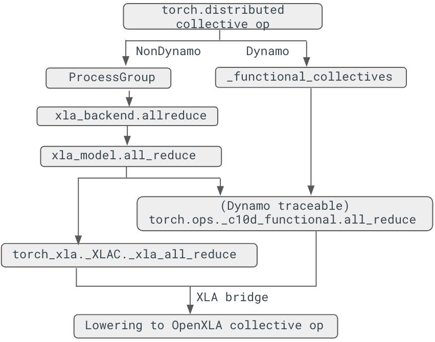

Support of Torch Distributed API in PyTorch/XLA¶
Before the 2.5 release, PyTorch/XLA only supported collective ops through our custom API call torch_xla.core.xla_model.*. In the 2.5 release, we adopt torch.distributed.* in PyTorch/XLA for both Dynamo and non-Dynamo cases.
Collective ops lowering¶
Collective ops lowering stack¶
After introducing the traceable collective communication APIs, dynamo can support the collective ops with reimplementing lowering in PyTorch/XLA. The collective op is only traceable through torch.ops._c10d_functional call. Below is the figure that shows how the collective op, all_reduce in this case, is lowered between torch and torch_xla:

*Figure 1. Collective ops lowering stack*
non-Dynamo case¶
Collective ops are lowered through registering the ProcessGroupXla, which is derived from ProcessGroup:
# torch_xla/distributed/xla_backend.py
def _create_xla_process_group(prefix_store, rank, size, timeout):
assert not xr.is_spmd(
), "XLA backend is not supported with SPMD. Please use a CPU process group instead."
return ProcessGroupXla(prefix_store, rank, size, timeout)
def _register_xla_backend():
dist.Backend.register_backend('xla', _create_xla_process_group, devices='xla')
class ProcessGroupXla(ProcessGroup):
...
def allreduce(self, tensors, all_reduce_options):
...
def allgather(self, output_tensors_list, input_tensors, opts=None):
...
The corresponding xla dist backend is initialized when we call:
def _mp_fn(rank):
dist.init_process_group("xla", init_method='xla://')
In this way, collective ops will be called based on the progress group instance:
# E.g., pytorch/pytorch/blob/main/torch/distributed/distributed_c10d.py
@_exception_logger
def all_gather(tensor_list, tensor, group=None, async_op=False):
...
group = group or _get_default_group()
work = group.allgather([tensor_list], [tensor]) # uses ProcessGroupXla.allgather instead
Dynamo case¶
For dynamo case, certain collective ops are remapped to the new function in pytorch/torch/distributed/_functional_collectives.py. For example, all_reduce() will be mapped to all_reduce_inplace(), where eventually torch.ops._c10d_functional.all_reduce(). Once we reach the _c10d_functional, we can rewrite the op through PyTorch/Xla lowering:
at::Tensor all_reduce(const at::Tensor& self, std::string reduceOp,
std::string /*group_name*/) {...}
TORCH_LIBRARY_IMPL(_c10d_functional, XLA, m) {
m.impl("all_reduce", all_reduce);
}
API description¶
For release 2.5, we now support four collective operations for both Dynamo and non-Dynamo cases. Our goal is to align the distributed operation (dist op) APIs with PyTorch’s upstream implementation. While the function signatures remain consistent, certain input restrictions still apply. For instance, specifying multiple groups for distributed collective operations is not yet supported. For usage examples, refer to test_collective_ops_tpu.py, which demonstrates the use of dist ops in both Dynamo and non-Dynamo scenarios. Below are the details for each operation:
dist.all_reduce(input: torch.Tensor, op: dist.ReduceOp = ReduceOp.SUM)
all_reduce performs an in-place reduction on the input tensor by aggregating data from all nodes.
dist.all_gather_into_tensor(output, input)
all_gather_into_tensor gathers the input tensor from all nodes and updates the output tensor in-place. It also returns an alias of the output.
dist.reduce_scatter_tensor(output, input, op: dist.ReduceOp = ReduceOp.SUM)
reduce_scatter_tensor reduces the input tensor across all nodes and distributes the result to the output tensor in-place. It returns an alias of the output.
dist.all_to_all_single(output, input, output_split_sizes=None, input_split_sizes=None)
all_to_all_single function performs an all-to-all communication, updating the output tensor in-place and returning its alias.
Note: Although output_split_sizes and input_split_sizes are accepted as arguments, they must be either None or set to all 1s. This limitation reflects a compromise between maintaining PyTorch’s API signature and the constraints of the XLA AllToAll operation.